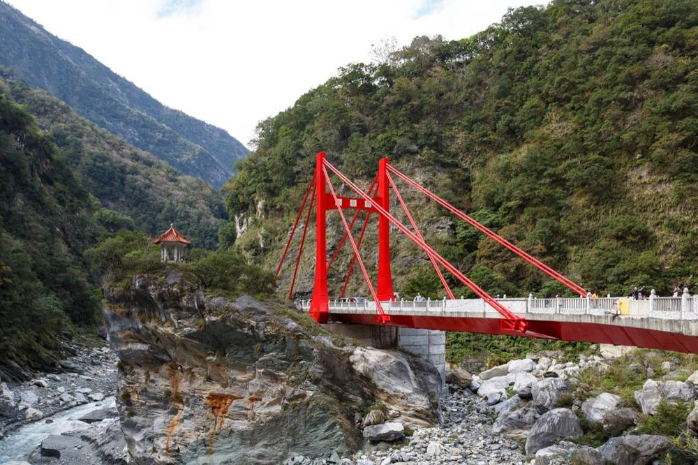

FOR 高中工程設計課程・獨立教育活動
用地圖看見台灣的工程，
理解設計背後的決策。
200 個跨越橋梁、水庫、半導體廠、風場、車站與美術館的台灣工程地景； 從衛星空照圖或實景街景開始辨識位置，再認識它的結構、機構與所屬工程主題—— 把「地理」與「工程設計」放回同一張地圖。

W: 121.62E
N: 24.16N
SECTION 01 — 學習流程
三個步驟，走完一次完整的探索。建議依序進行：先導讀、再探索、最後完成學習單。
SECTION 02 — 四大主題
200 個工程地景，分四張表。資料底層按教科書研究報告的四張表整理，每張 50 筆，可獨立或合併使用。
THEME 01
結構力學與土木工程
橋梁、水庫、隧道、高樓——力如何在材料與幾何中傳遞。
西螺大橋 / 翡翠水庫 / 雪山隧道
THEME 02
參數化設計與現代建築
從 CAID 到無梁曲面，數位幾何如何重塑公共建築。
台中歌劇院 / 衛武營 / 北流
THEME 03
機電整合與自動化機構
軌道、纜車、開合橋、機械手臂——把馬達與感測接上世界。
大港橋 / 月台幕門 / 林鐵螺旋
THEME 04
新興科技與綠色能源
離岸風場、太陽光電、半導體廠、量子電腦——台灣的下一個十年。
竹南離岸風場 / 台積電 / 太空中心
TARGET
適合誰用？ 高中生活科技／工程設計課程、跨域 STEAM 活動；單堂課可導讀＋一局探索，雙堂課則加上學習單整理與小組分享。